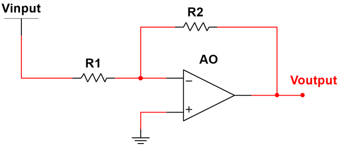
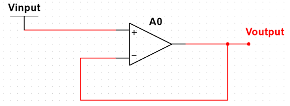

AMPLIFICADORES OPERACIONALES
CURSO DE APLICACIONES MÓVILES 2023-1
Programa de Ingenieria Electronica
DIFERENCIAL

El amplificador operacional en modo diferencial con ganancia controlada, o también conocido como amplificador diferencial, amplifica la diferencia entre las dos entradas de voltaje. La no inversora menos la inversora. La ventaja de el amplificador diferencial es que rechaza el ruido en modo común. En este caso, la salida esta en función a una ganancia, la cual es proporcional a la relación de resistencias.
INVERSOR

En este circuito, la entrada V(+) está conectada a masa y la señal se aplica a la entrada V(-) a través de R1, con realimentación desde la salida a través de R2. La entrada V(-) es un punto de tierra virtual, ya que está a un potencial cero.
El circuito comúnmente más utilizado es el circuito de ganancia constante. El amplificador inversor amplifica e invierte una señal 180º, es decir, el valor de la tensión de salida está en oposición de fase con la de entrada y su valor se obtiene al multiplicar la tensión de la entrada por una ganancia fija constante, establecida por la relación entre R2 y R1, resultando invertida esta señal (desfase).
NO INVERSOR
Este es el caso en que la tensión de entrada Ve, está en fase con la de salida Vs, esta tensión de salida, genera una corriente a través de R2 hacia el terminal inversor, a su vez a través de R1, se genera una corriente hacia el mismo terminal pero de signo contrario, por lo que ambas corrientes se anulan, reflejando en la salida la tensión de entrada amplificada.
SEGUIDOR

La señal de salida, se aplica a la entrada no inversora en realimentación total, lo que según el criterio anterior, la señal Ve de entrada es similar al de salida, con lo cual no existe amplificación, lo que aparentemente no tiene sentido, sin embargo tiene su aplicación en los conversores de impedancia ya que toma la señal del circuito anterior, presentando una alta impedancia y entrega una impedancia prácticamente nula al circuito de carga.
En general, este circuito presenta estos parámetros: Ze > 400MW; Zs = < 1W; Ancho de banda ±1MHz.
SUMADOR INVERSOR

El sumador inversor, es una aplicación práctica de la característica de tierra virtual en el nudo suma, en la entrada V(-) del amplificador inversor. Este es de los circuitos que probablemente sea el más utilizado, el amplificador sumador. En el sumador inversor, la suma algebraica de las tensiones de cada entrada multiplicado por el factor de ganancia constante, se obtiene en la salida.
En este circuito, como en el amplificador inversor, la tensión V(+) está conectada a masa, por lo que la tensión V(-) estará a una masa virtual, y como la impedancia de entrada es infinita toda la corriente circulará a través de Ro y la llamaremos Io.
La ganancia global del circuito la establece la Ro, que, en este sentido, se comporta como en el amplificador inversor básico. La parte más interesante de esta configuración es el hecho de que la mezcla de señales lineales de entrada, no produce interacción entre las entradas, puesto que todas las fuentes de señal alimentan el punto de tierra virtual. El circuito puede admitir cualquier número de entradas.